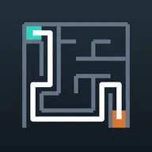
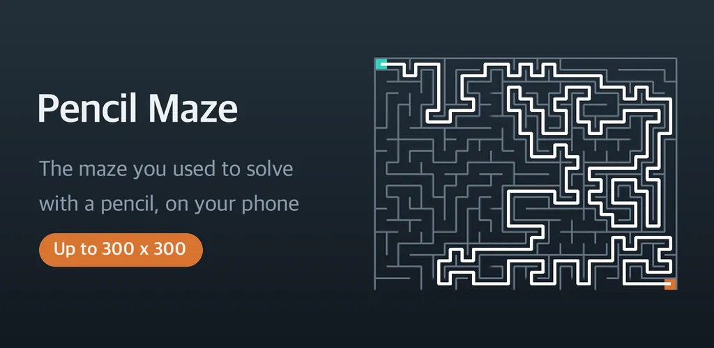
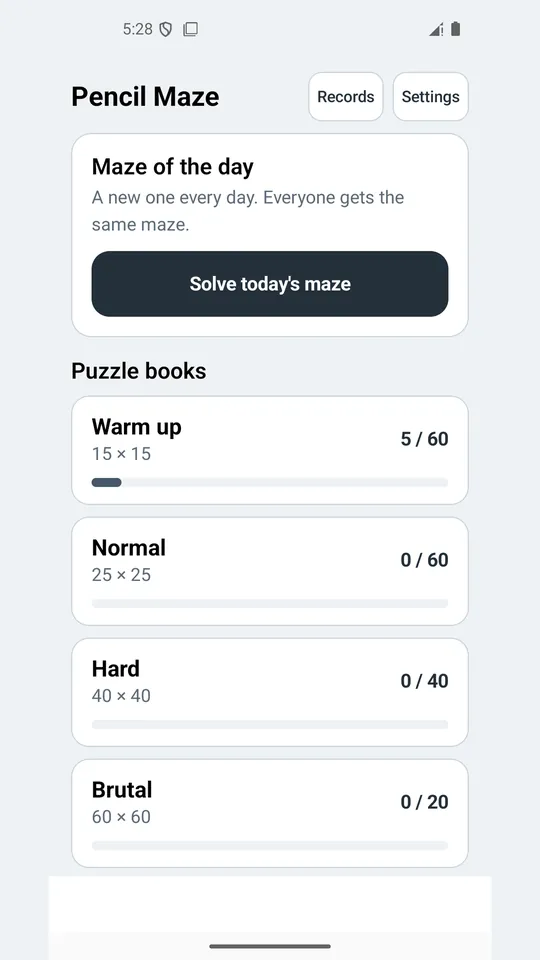
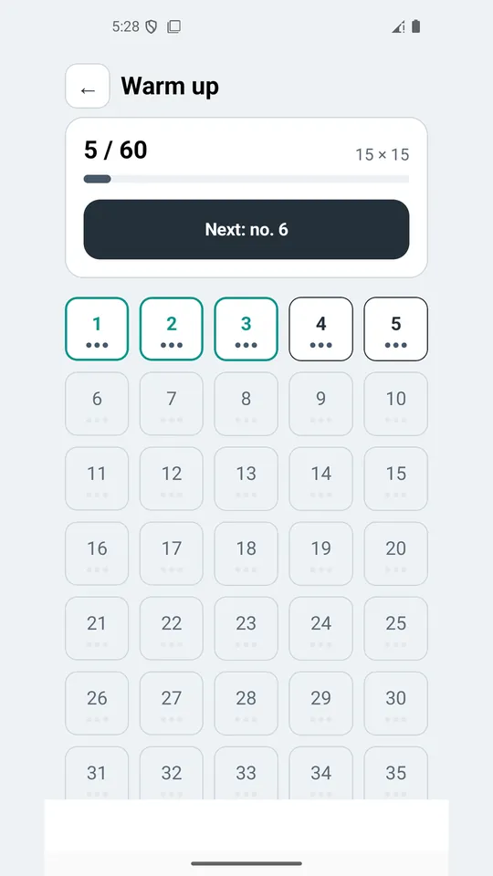
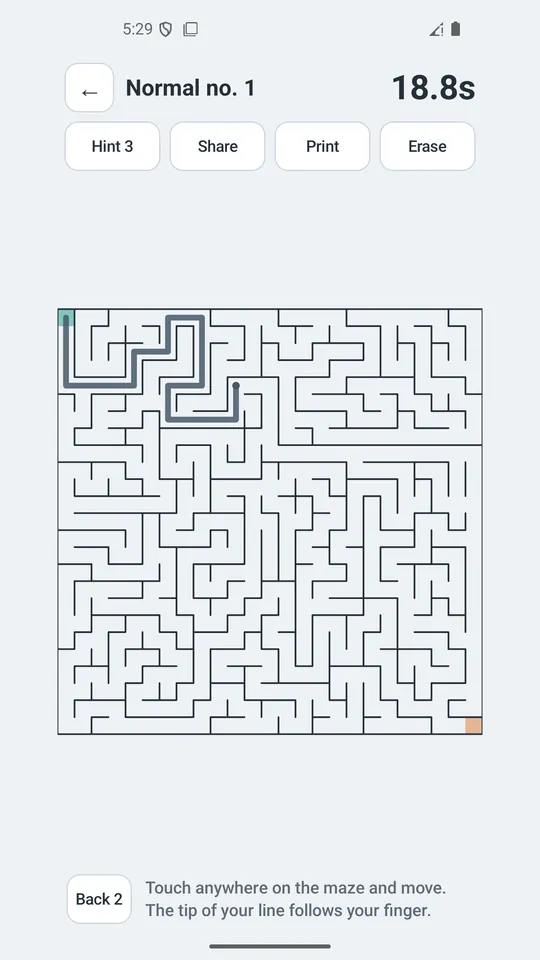
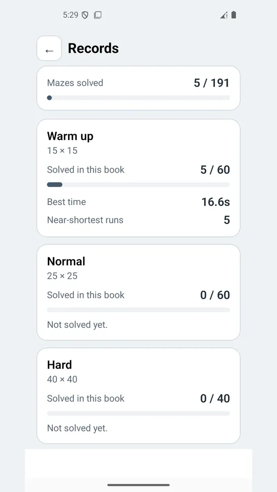
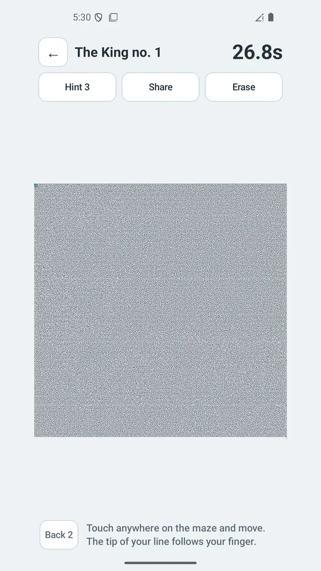
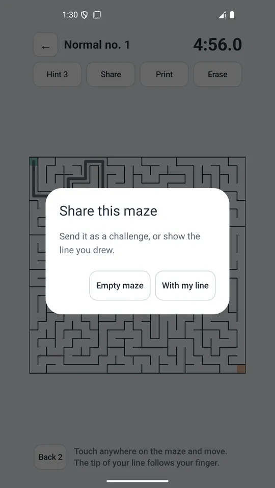

Pencil Maze - Hard Mazes
Draw your way out with one finger. 191 mazes, from 15x15 up to 300x300.







About this app
The maze puzzles you used to solve with a pencil, moved onto your phone.
You do not tap a character around. You put a finger anywhere on the screen and drag, and **the tip of the line follows like a pencil.** Walls physically block you, and retracing your own line erases it, exactly the way paper works.
- *191 numbered puzzles**
Warm up 15x15 (60) · Normal 25x25 (60) · Hard 40x40 (40) · Brutal 60x60 (20) · Insane 100x100 (10) · and one single King maze at 300x300.
It is a numbered book, not an endless random feed, so **you can always see how far you have come.** Every puzzle is identical on every device.
- *Not how fast, but how little you wandered**
Every maze has a different shortest path, so comparing times across puzzles means nothing. When you finish, you get a stamp based on **how much further you walked than the shortest route** (0% means you took it exactly), plus how many dead ends you stepped into.
- *An unfinished maze stays unfinished**
Close the app, come back in a week: your line and your clock are still there. A 300x300 maze is not meant to be finished in one sitting.
- *If you were looking for genuinely hard mazes**
From 40x40 on, memorising junctions stops working. Loops are mixed in, so dead-end filling does not help either. At 100x100 you need to zoom in to see the corridors, and the King maze has a shortest path of over 8,000 cells.
- *Also inside**
· Pinch to zoom and pan
· A hint that reveals only the next few cells when you are stuck (3 per maze)
· Daily maze — a new one every day, the same one for everyone
· A back-up-two-cells button for when you take a wrong turn - hold it down to keep reversing
· Print to A4 through the system print dialog, or save as PDF (up to Hard 40x40)
· Share a maze you solved - send it blank so the other person can solve it, or with your line to show how you did it
· Mazes work offline - no camera, location, contacts or storage access
- *There are no ads on the solving screen.** Your finger sweeps across the whole screen here, so a banner in that place would get clicked by accident. Ads appear on the home and records screens, and once when you start a maze.
This app is free and supported by ads. It is not designed for children.
Android · free with ads · Developer: RealTunaLove · Store listing in 17 languages
Background story: why I built it